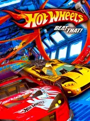

 |
|
| Tiempo de juego | 9m 30s |
| Última actividad | 22/1/2026 18:08:04 |
| Añadido | 23/9/2025 2:30:56 |
| Modificado | 3/12/2025 18:32:44 |
| Estado de finalización | Jugado |
| Librería | Playnite |
| Fuente | |
| Plataforma | PC (Windows) |
| Fecha de lanzamiento | 2/7/2007 |
| Puntuación de la Comunidad | 67 |
| Puntuación de la Crítica | 50 |
| Puntuación de usuario | |
| Género | Racing |
| Desarrollador | Eutechnyx Humansoft |
| Editor | Activision |
| Característica | Single Player Split Screen |
| Enlaces | |
| Tag | Texto en Inglés |
¿Te acordás de tirar tus autitos Hot Wheels por esas pistas de plástico naranja que nunca encajaban bien? Este juego es exactamente esa fantasía hecha realidad. "Hot Wheels: Beat That!" es uno de los mejores y más divertidos juegos de la marca, un arcade de carreras que entiende perfectamente la magia de los juguetes y la lleva al siguiente nivel.
La jugabilidad es adrenalina pura y cero simulación. Todo se basa en hacer derrapes imposibles para cargar el turbo y usarlo en el momento justo para salir disparado. Es velocidad, saltos que desafían la gravedad y la satisfacción de caer perfecto en la pista después de volar por los aires. Es un juego fácil de empezar a jugar, pero con un vicio tremendo.
Pero no es solo correr. El "Beat That!" del título viene por el combate. Las pistas están llenas de power-ups al mejor estilo Mario Kart: cohetes que buscan a tus rivales, escudos, manchas de aceite, rayos que paralizan... El quilombo está asegurado en cada carrera. Es tan importante manejar bien como cagar a palos al que tenés adelante.
Lo que hace al juego una verdadera joya es el diseño de los circuitos. No corrés en autódromos aburridos; corrés en pistas gigantes montadas en escenarios cotidianos. Una habitación con la pista pasando por encima de la cama, un campo de minigolf, una playa... la sensación de ser un autito de juguete en un mundo de gigantes está increíblemente bien lograda.
"Beat That!" es un arcade de carreras casi perfecto en su simpleza. Es colorido, es caótico y es increíblemente divertido, especialmente con amigos. Captura como ningún otro la imaginación de un pibe jugando en el piso de su cuarto, ofreciendo una dosis de nostalgia y velocidad que es pura alegría.